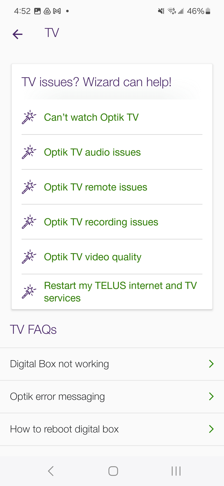

Telus Connect
One of my notable achievements is the successful launch of Telus Connect, where I led a cross-functional team in developing a feature-rich, user-friendly mobile app that acts as a companion to their hardware for Internet services. It allows users to easily set up their internet through DIY flows and gives them access to parental controls and Wi-Fi management. This project required meticulous attention to detail, effective communication, and the ability to adapt to evolving user needs.
- IDE : Android Studio
- Language : Kotlin
- Architecture : MVVM, Android architecture components
- Networking : Coroutines, Retrofit and OKHttP
- Dependency Injection : Dagger2, Android Hilt
- Data Streams : RxJava/RxAndroid, kotlin Flows
- Unit testing : Mockito, JUnit
- CI/CD : Github Actions, Microsoft Appcenter
- Analytics : Adobe
- Content Delivery : Contentful CMS
- Other Integrations : Firebase - Notifications, A/B testing and Dynamic links
Android Tech Stack
- In early 2019, when I commenced work on the product, my initial task involved implementing a native login feature. Upon investigating the identity platform utilized by Telus, I found that they did not provide an SDK. Consequently, to enable native login functionality rather than resorting to a web-based approach, I had to emulate the behavior of a browser to replicate the login flow seamlessly within the application. Subsequently, Google Smart Lock functionality was integrated into the system as well.
- During the COVID-19 pandemic, when technicians faced restrictions entering customers' houses for internet setup, an opportunity arose to deliver setup procedures directly through the app. These flows were expected to expand over time and evolve based on feedback and firmware updates. The objective was to seamlessly deliver these flows and incorporate changes without requiring a full app release, except in cases involving API calls within specific steps. To facilitate this agile content delivery, the team opted for Contentful CMS. Collaboratively, we designed reusable data models to orchestrate the flows and their corresponding user interfaces (UI).
- Following the successful implementation of the aforementioned approach, similar methods were employed to deliver Telus Tips content, which was updated on a weekly basis. Additionally, this approach was utilized to deliver dynamic help content within the support section of the app, as well as certain other UI elements that could be managed without requiring a full app release.


- The pivotal aspect of this implementation was to design models divided into atoms and molecules, enabling their reusability as plug-and-play components.
- The remaining components of the app involved periodically calling REST APIs at fixed intervals to display real-time status updates regarding a customer's home services. Kotlin coroutines and Retrofit were used for the purpose.
- For certain hardware, it was necessary to discover the device via UDP and subsequently call local APIs instead of relying on cloud-based services.
- The app also included integrations with Adobe for analytics and Firesabe for dynamic links, notifications and A/B.
Other apps
I had the opportunity to work on the OCEARCH shark tracker app, which was in need of a comprehensive overhaul, redesign, and rearchitecting due to its outdated nature.
- OCEARCH is a global nonprofit organization dedicated to tracking and recording ocean giants, contributing to research efforts, and inspiring action to restore the balance of the ocean ecosystem.
- We received coordinates of the animals via a REST API, which gathered data from GPS trackers, and then displayed this information on the map. Additionally, we implemented functionality to draw the path of their travel over time.
- During the early years of my career, I worked with startups, and one of the products from those companies is the Oodles ebook reader. The concept behind this product was to compile all the classics that are now royalty-free into one app with a built-in reader. Users could browse through the collection of books and read them seamlessly within the app.
- I developed the app on the Android platform as the sole developer. The app recieved an overwhelming response with more than 5 Million downloads.